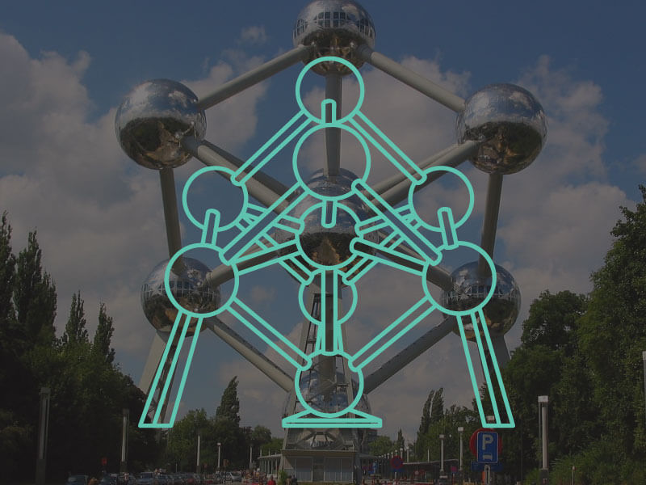

Atomium
The Atomium is a landmark building in Brussels, originally constructed for the 1958 Brussels World's Fair (Expo 58). It is located on the Heysel Plateau, where the exhibition took place. It is now a museum.
Designed by the engineer André Waterkeyn and architects André and Jean Polak. Its nine 18m diameter stainless steel clad spheres are connected, so that the whole forms the shape of a unit cell of an iron crystal magnified 165 billion times. Tubes of 3m diameter connect the spheres along the 12 edges of the cube and all eight vertices to the centre. They enclose stairs, escalators and a lift to allow access to the five habitable spheres, which contain exhibit halls and other public spaces.
In 2013, CNN named it Europe's most bizarre building.